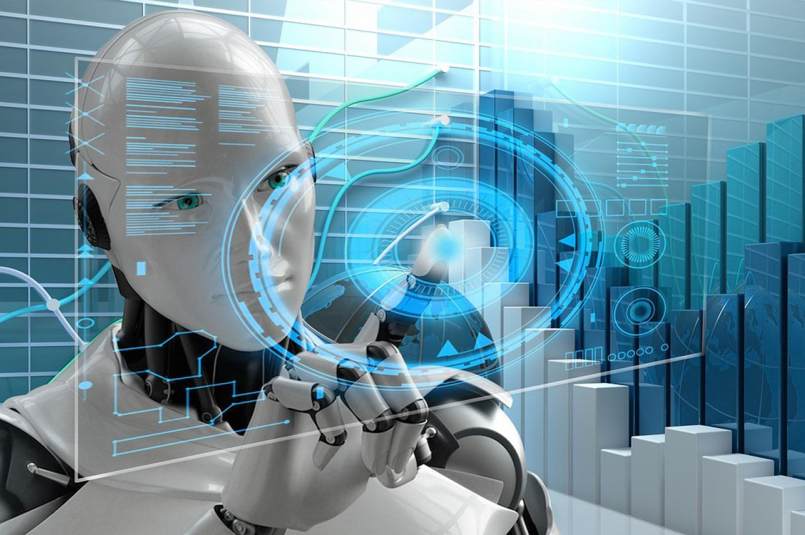

ما هي فئات الذكاء الاصطناعي :-

أنموذج نظريق العقل
يعمل عليها ليستطيع أن يعبر عن الحالة الداخلية لها , وباستطاعتها التنبؤ عن المشاعر ومواقف الاخرين وبمقدورها ان تتفاعل معهم

الضيق او الضعيف
هو أبسط أنواع الذكاء الاصطناعي بحيث تتم معالجتة ليقوم بوظائف محددة وداخل بيئه معينة ويمكن ان تصرفاتة وردود أفعالة على المواقف محددة
السوبر الخارق
النماذج المنتجة من هذا النوع التي تحاكي الانسان ما زالت تحت التجربة ويمكن ان يحاول ان يفهم طبيعة الافكار البشرية والإنفعالات المؤثرة في سلوك البشر
العام أو القوي
وهو يتمتع بقدرة على تحليل البيانات وجمعها وبإمكانة ان يستفيد منها من جرُاء تراكم الخبراتة وهذا الذي يؤهلة لكي يتخذ بغض القرارات الذاتية وبشكل مستقل